Vernacular Branding
Micro-Exhibition: Vernacular Branding
On 10 December 2025, alongside the launch of Vernacular Branding, the first micro-exhibition unfolded at Government College of Art and Design, Nagpur (formerly Chitrakala Mahavidyalaya).
What began as an open call took shape as a compact but dense gathering of works—spanning graphic interventions, visual observations, and speculative responses to everyday life. The exhibition brought together voices from across India, each engaging with questions of identity, visibility, authorship, and the aesthetics of the ordinary.
Rather than a formal exhibition, it functioned as a working space—a place where documentation met interpretation, and where design practice intersected with lived realities. Conversations unfolded among contributors, students, and visitors, often informally and unfinished. That openness felt essential.
We see this as the first of many such moments.
The micro-exhibition format allows the project to remain light, mobile, and responsive—capable of adapting to different cities, contexts, and communities. Rather than scaling up, the intention is to move sideways, inviting new contributions and re-reading existing ones in different settings.
Future iterations may take place in studios, institutions, informal spaces, or in collaboration with practitioners and researchers working across design, art, and visual culture.
If you’re interested in hosting, collaborating, or extending the project into new contexts:
Contact us: contact@vernacularbranding.in
Vernacular Branding: Reading Identity through Design and Visibility is available as a limited first edition.
Bring the ‘Vernacular Branding’ archive to your bookshelf or gift a copy to an institution. Secure your copy online based on your region.
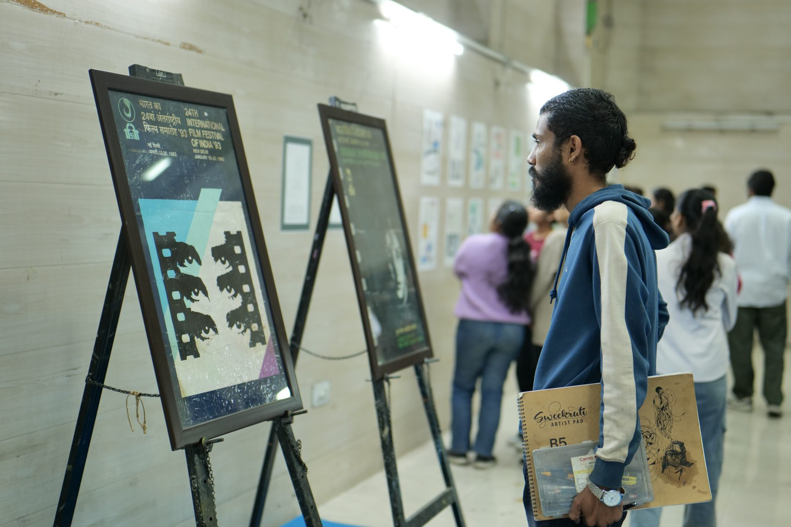
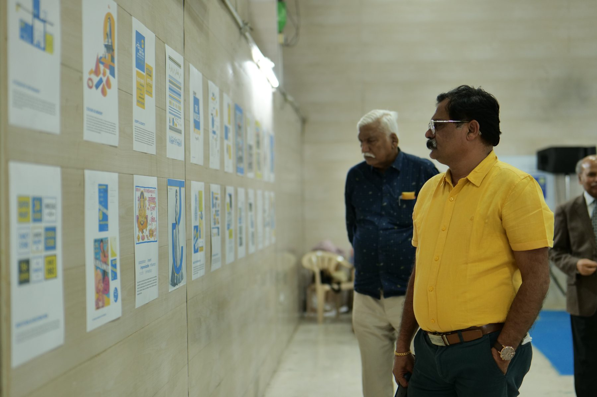

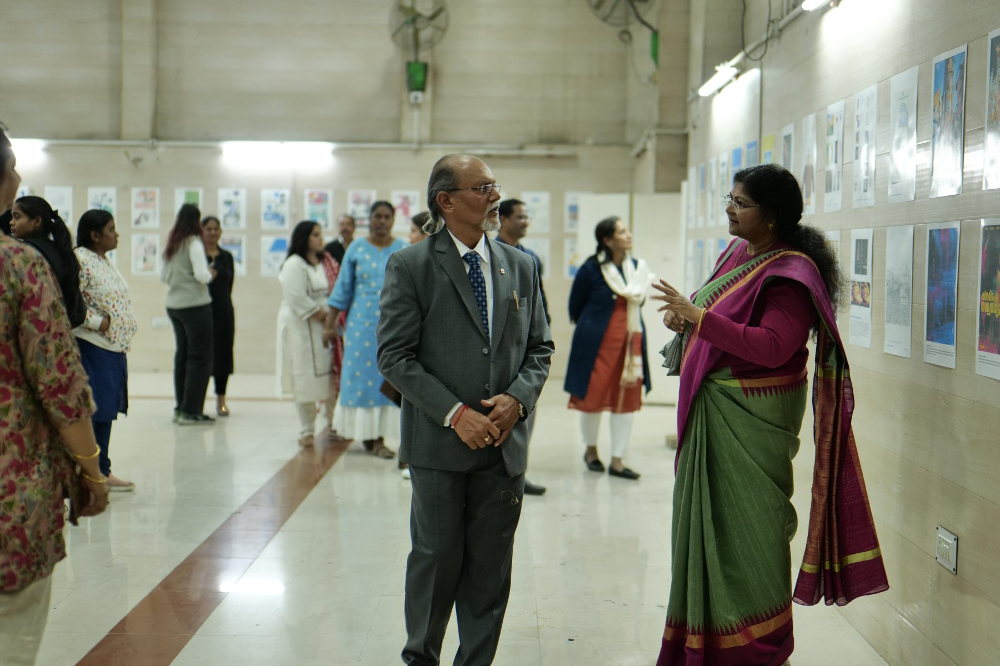

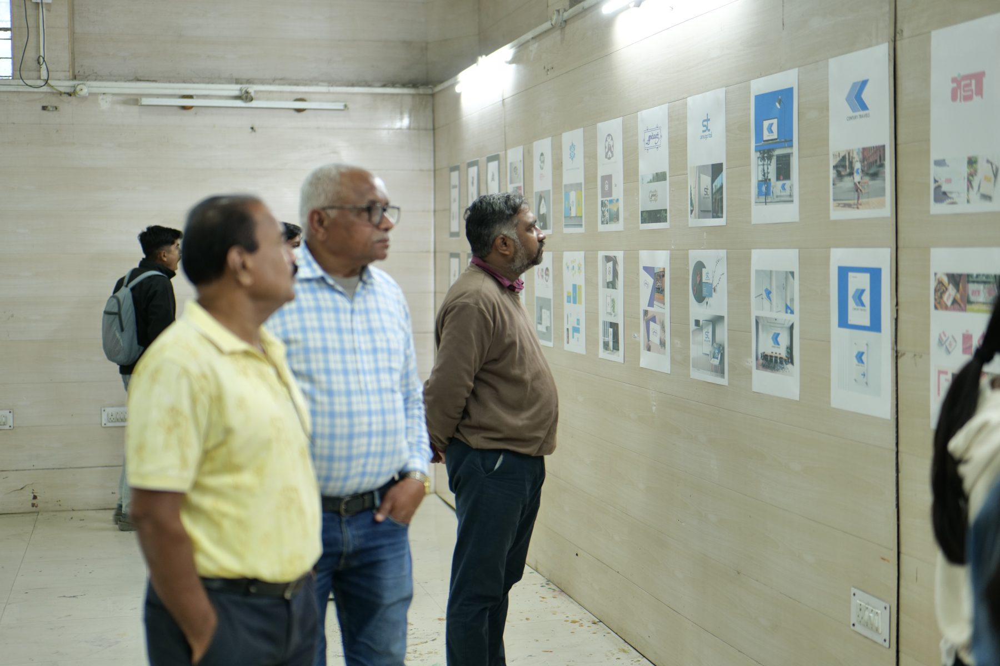
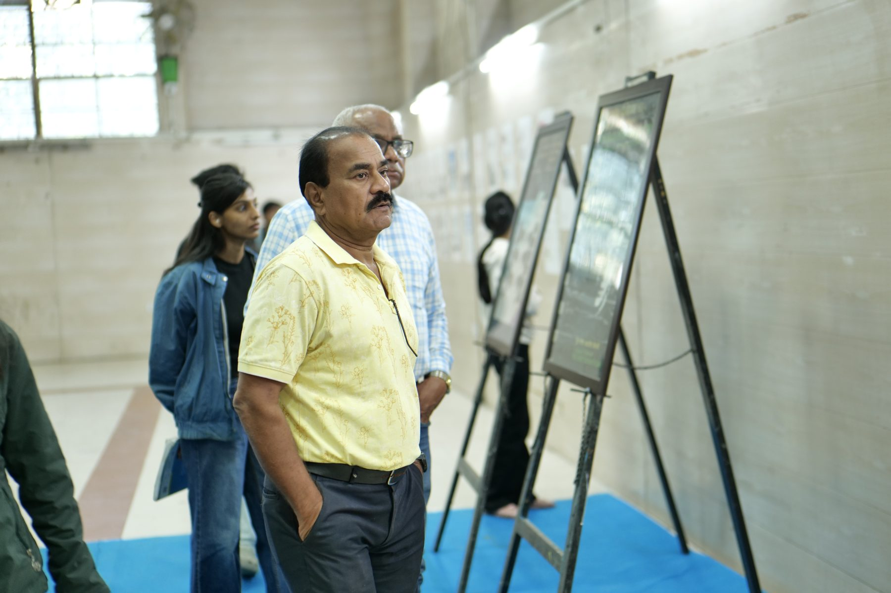
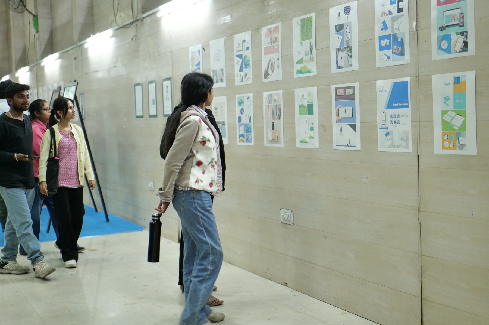
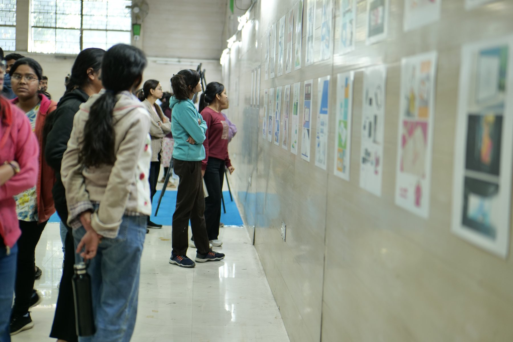
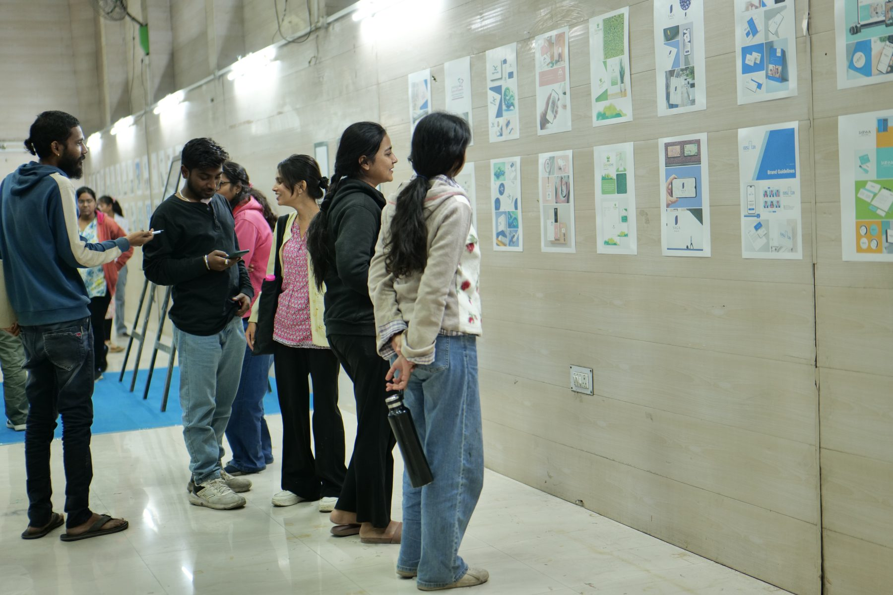
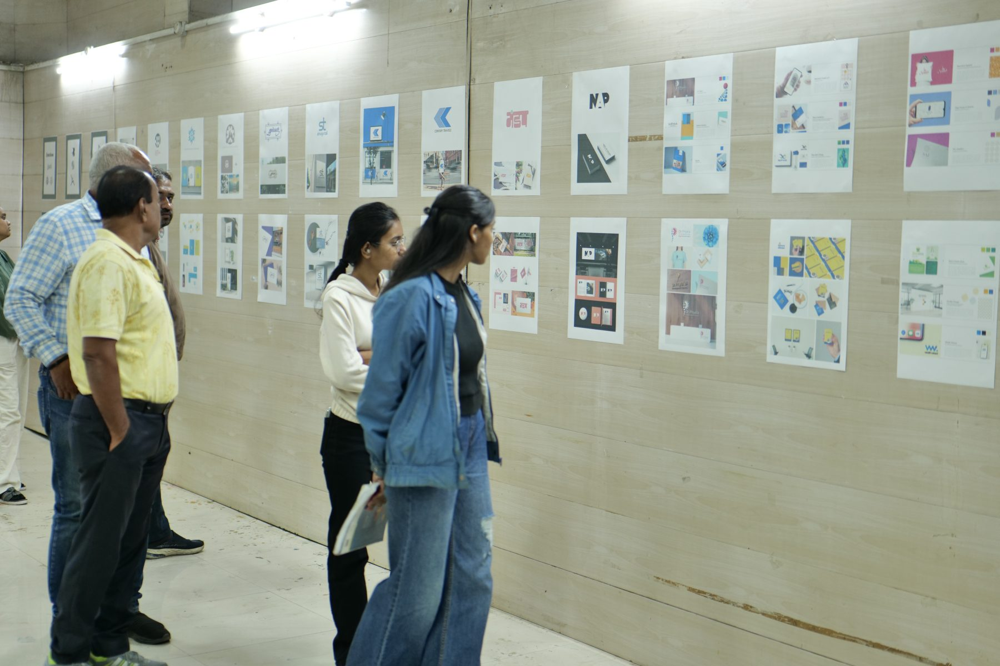
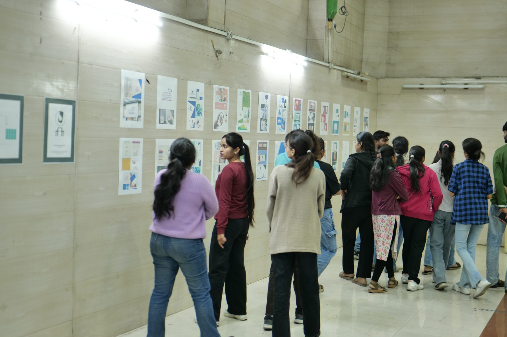
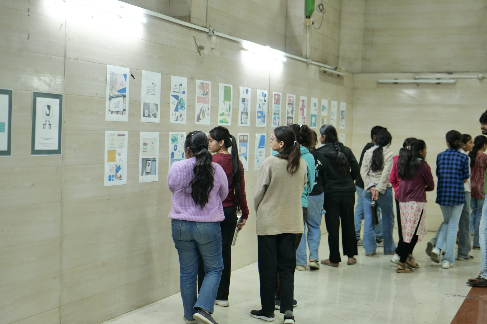